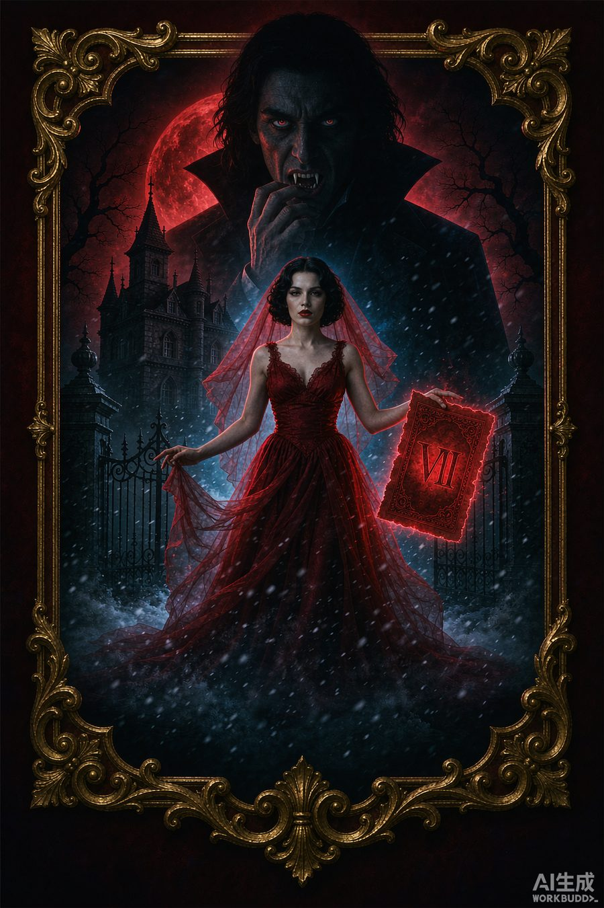

关于本书
阿什福德家的次女瑟拉菲娜，从小养在偏院，连年节宴席都上不了桌。长姐逃婚前夜，父亲把她从偏院拖出来，套上嫁衣，替进梵家庄园——因为对面的新郎，是吸血鬼公爵瓦莱里安。
腕上被烙下血契：七夜之内，若公爵不以真心血誓认她为真正夫人，她便要沦为血仆，永失自由意志。而那位公爵，连她的脸都没看清，只当她是一面挡刀的盾。七夜倒计时里，她发现自己流着被家族抹去的守夜人血脉，母亲早把退路缝进了她身上。当莫里家破门复仇，她抬手碎契、一刃定局；当全家跪在庄园外求见，她只回一行字：当年说我是多余的，如今我也是你们够不着的。
主要人物
瑟拉菲娜
阿什福德家次女，守夜人血脉后裔。被换嫁、被当盾，却在第 7 夜撕契觉醒，成了自己的主。
瓦莱里安·梵
雾湾城吸血鬼公爵。算计半生，用婚约作盾挡莫里家，直到被那面盾反将一军，终立真心盟约。
科迪莉亚
瑟拉菲娜长姐，逃婚出走，事后随父亲跪求妹妹回护家业。
阿什福德家主
瑟拉菲娜之父，把次女当多余筹码随手安放，最终尝到"多余"二字的重量。
小鹊
被卖进梵家的丫鬟，雪夜里给瑟拉菲娜递一块热栗子糕，后留侍藏书楼。
莫里家主
三年前被瓦莱里安屠门的宿敌，今夜破门复仇，却死在守夜人之刃下。
章节目录
第01章第一幕 红轿里的人婚轿停在梵家庄园铁门前时，她才知道自己是被换上去的。→
第02章第二幕 七夜的刻度西厢窗外正对后山枯林，她独自坐着，听雪落与腕间血契的呼吸。→
第03章间幕 公爵的七夜瓦莱里安并非不在意这桩婚约。→
第04章第三幕 母亲留下的东西第五夜，瑟拉菲娜做了一个梦，梦里有母亲缝进她衣里的退路。→
第05章第四幕 倒计时归零第七夜，莫里家来了。→
第06章第五幕 全家后悔消息传到阿什福德家，是三日后。→
第07章第六幕 并肩开春，雾湾城换了天。→